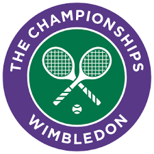
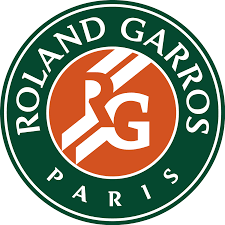
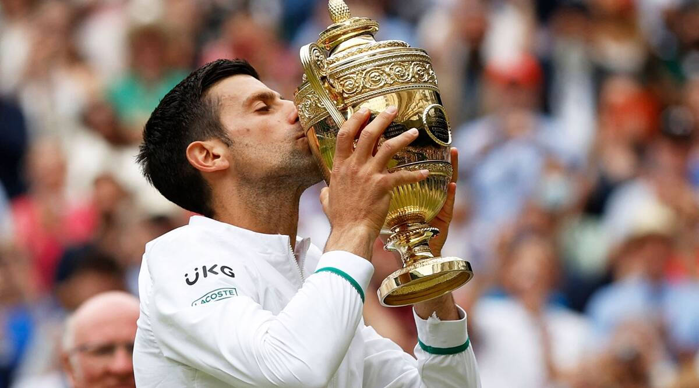
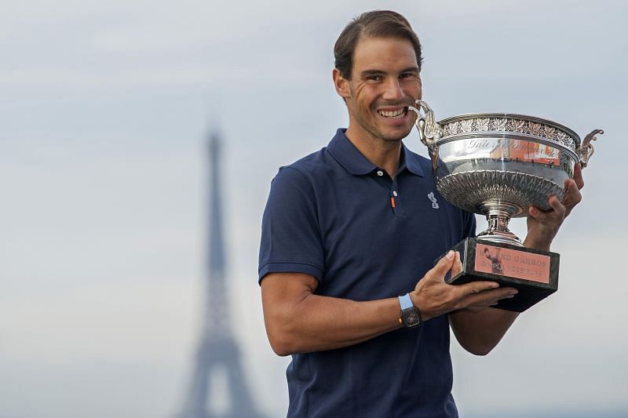

TENNIS
Tennis is a racket sport that can be played individually against a single opponent or between two teams of two players each. Each player uses a tennis racket that is strung with cord to strike a hollow rubber ball covered with felt over or around a net and into the opponent's court.
Tennis Tournaments:
WIMBLEDON
The Championships, Wimbledon, commonly known simply as Wimbledon or The Championships, is the oldest tennis tournament in the world and is widely regarded as the most prestigious.

THE FRENCH OPEN
The French Open, also known as Roland Garros, is a major tennis tournament held over two weeks at the Stade Roland-Garros in Paris, France, beginning in late May each year. The tournament and venue are named after the French aviator Roland Garros.

Some Famous Tennis players:
NOVAK DJOKOVIC
Novak Djokovic is a Serbian professional tennis player. He is currently ranked as world No. 1 by the Association of Tennis Professionals. Djokovic has been No. 1 for a record total of 328 weeks, and has finished as year-end No. 1 on an Open Era joint record six occasions.

RAFEAL NADAL
Rafael "Rafa" Nadal Parera is a Spanish professional tennis player. He is ranked world No. 3 by the Association of Tennis Professionals, has been ranked No. 1 in the ATP rankings for 209 weeks, and has finished as the year-end No. 1 five times.
